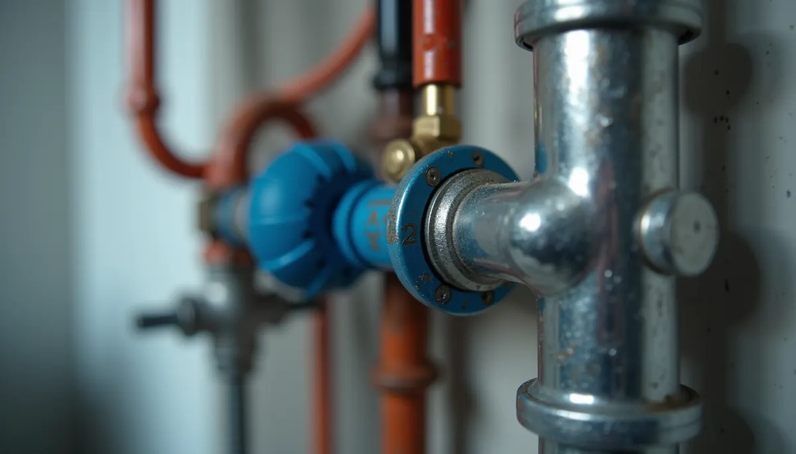
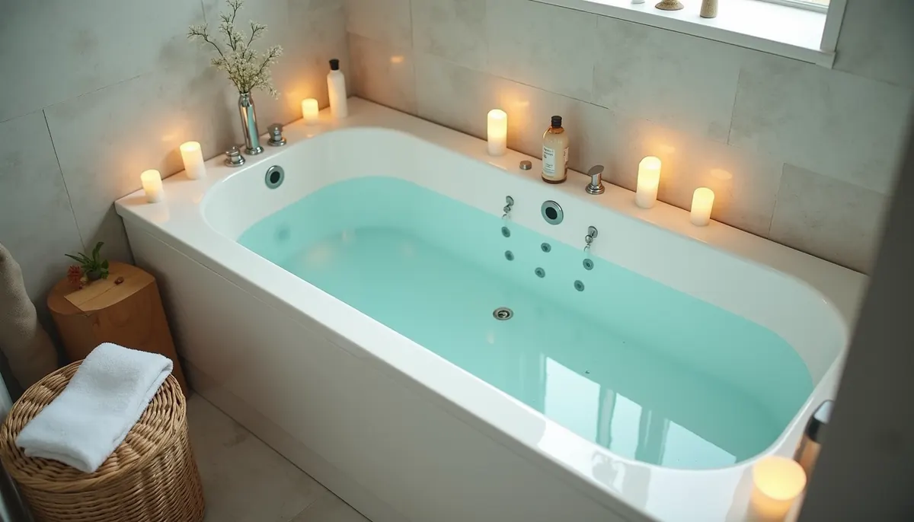
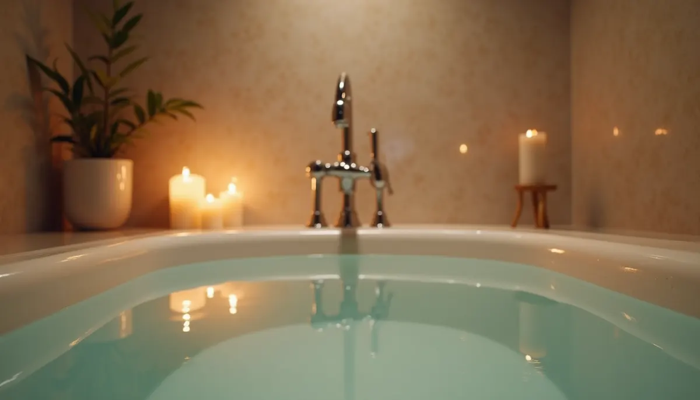

Imagine stepping into your shower or filling your bathtub, only to wait impatiently for warm water to flow. This frustrating delay wastes not only time but also precious water. A hot water recirculation pump can change this experience, ensuring that comfort and sustainability are at your fingertips.
By upgrading your bathing system, you can enjoy instant hot water while saving significant amounts of water and energy. Let’s explore why a hot water recirculation pump is essential for modern living.
Instant Comfort: The Recirculation Pump Difference
A hot water recirculation pump is a crucial addition to your plumbing system that dramatically improves your bathing routine. Here’s how this device redefines comfort and efficiency in your home:
Eliminates the Wait Time
In typical plumbing systems, the water in the pipes cools down when not in use. This means when you turn on the tap, you first run cold water down the drain until the hot water arrives. With a recirculation pump, this wait time is eliminated.
For instance, without a pump, you might waste 2 to 3 gallons of water while waiting for it to heat up. With a recirculation pump, hot water is accessible immediately, allowing you to enjoy your shower or bath without delay.

Creates a "Hot Water Loop"
The pump creates a closed loop of hot water circulating from the heater back to the faucet. This system ensures that hot water is always nearby. You do not just save water; you also maximize your comfort.
Consider a family of four. Each family member might waste an average of 3 gallons of water per shower. If they shower daily, that leads to a waste of approximately 1,095 gallons a year. A recirculation pump helps eliminate such waste, providing convenience without guilt.
Instant Hot Water for Your Bath
Picture this: you fill your bathtub and enjoy warm water immediately. There’s no shivering while waiting, and you can soak in comfort right away. For those who cherish relaxation, a recirculation pump becomes an essential upgrade, not just an option.
The Eco-Friendly Bonus: Zero Water Waste
While comfort tops the list of benefits, the environmental impact of a hot water recirculation pump is equally significant. This system promotes sustainability and provides savings on your utility bills.
Saving Gallons Per Use
Every time you avoid running cold water, you save gallons. A typical family can save over 1,000 gallons of water each year with a recirculation system. This is a remarkable step toward eco-friendly living, ensuring you are kinder to the planet.
Lower Utility Bills
With a recirculation pump, you also reduce energy use. Since you’re not waiting for the water to heat up, you use less energy overall. This can lead to savings of up to 30% on your water heating costs, allowing you to keep more money in your pocket while being eco-conscious.

Installation and Maintenance
Easy Installation
Installing a hot water recirculation pump is often straightforward. Many systems can be integrated into existing plumbing with minimal modifications, making it a quick and hassle-free update. On average, Angle Stop Plumbing can complete the installation in just a few hours.
Minimal Maintenance
Once in place, a recirculation pump requires little attention. Routine checks ensure that the system operates smoothly, but no complicated maintenance or frequent repairs are necessary. This allows you to enjoy hot water convenience without constant upkeep.
Enhancing Your Bathing Experience
Upgrading to a hot water recirculation pump transforms your bathing routine into a more comfortable and efficient experience. You save time by eliminating wait periods, conserve water, and decrease energy costs.
This plumbing enhancement is more than just a luxury; it is an essential improvement for anyone who values comfort and sustainability.
Why wait for hot water when you can have it instantly? Investing in a hot water recirculation pump by Angle Stop Plumbing is a simple way to enhance your home and lifestyle.
